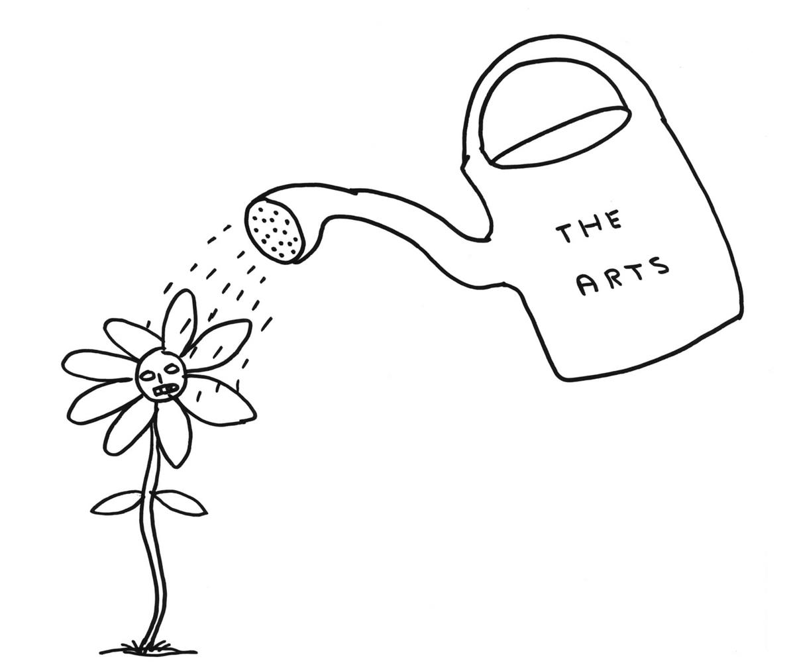

People living with dementia discuss art at a Royal Academy InMind session. Photograph: Roy Matthews
Sunday 16 July 2017 09.30 BST Last modified on Tuesday 18 July 2017 10.54 BST
The co-founder of John’s Campaign on a new parliamentary report that confirms the profoundly beneficial role of the arts in helping people with dementia
A few weeks ago, turning on the radio, I hear a voice saying that creative writing can help wounds heal faster. Startled, I turn the volume up. Volunteers were given small wounds; half were then asked to write about something distressing in their life, the other half about something mundane. The wounds of the confessional writers healed substantially more quickly. A thought or a feeling is felt on the skin. Our minds, which have power over our bodies, are in our bodies and are our bodies: we cannot separate the two. Words, self-expression, can tangibly help pain and suffering. Art can be medicine, for body and soul.
Over and over again, I am reminded of the transformative power of art. Answering the phone, I hear a deep and husky voice: “Doe, a deer, a female deer.” My mother, 85, frail, registered blind, bashed about by cancer and several strokes, is having singing lessons. At school, she was made to mouth the words of songs and she never sang again until now. Eighty years after being told she was tone deaf, her voice is being released. “Me, a name I call myself…”
Or recently I found myself in a hall in London, holding hands with a tiny woman from Jamaica and a large man from Birmingham, we dance. Bit by bit, our self-consciousness falls away and we grin at each other, laugh. Dementia has robbed them of their verbal ability – but there are many different languages, many different forms of embodied knowledge and ways that we can connect with each other.
Or sitting in a church in Essex on a Sunday in June, I look across at my friend’s mother. She is in her 90s and has dementia. There are days when she is wretched, chaotic and scared, but each Sunday she is soothed and even enraptured by singing the hymns that she sang when she was a girl. The music has worn grooves in her memory and while she may not be able to speak in full sentences any more, she can sing Abide With Me in a true voice and her face, lifted up, looks young, eager, washed clean of anxiety. My friend thinks that at these moments her mother’s brain comes together, “like a flower reviving when it’s being soaked in water”. People with dementia, she says, need to be drenched in art.
And this is precisely what the report of an all-party parliamentary group inquiry into arts, health and wellbeing, to be launched on Wednesday 19 July, will say. After two years of evidence gathering, roundtables and discussions with service users, health and social care professionals, artists and arts organisations, academics, policy-makers and parliamentarians, its unambiguous findings are that the arts can help keep us well, aid our recovery and support longer lives better lived; they can help meet major challenges facing health and social care – ageing, long-term conditions, loneliness and mental health; and they can help save money in the health service and in social care.
Dementia is an area where the arts can radically enhance quality of life by finding a common language and by focusing on everyday, in-the-moment creativity. As Lord Howarth of Newport, co-chair of the all-party parliamentary group, said: “The arts have a vital role to play for people with dementia. Research demonstrates that visual arts, music, dance, digital creativity and other cultural activities can help to delay the onset of dementia and diminish its severity. This not only makes a huge difference to many individuals but also leads to cost savings. If the onset of Alzheimer’s disease (which accounts for 62% of dementias) could be delayed by five years, savings between 2020 and 2035 are estimated at £100bn. Those are powerful statistics, but this isn’t just about money; the arts can play a powerful role in improving the quality of life for people with dementia and for their carers.”
It’s what Seb Crutch and his team are exploring in their inspiring project at the Wellcome Foundation. It’s what is happening with Manchester Camerata’s Music in Mind or with Music for a While, a project led by Arts and Health South West with the Bournemouth Symphony Orchestra, with Wigmore Hall’s participatory Music for Life, with the project A Choir in Every Home and Singing for the Brain; with dance classes in hospitals and residential homes; with art galleries and museums that encourage those with dementia to come and talk about art.

There are optimistic, imaginative endeavours going on all over the country, in theatres, galleries, cinemas, community centres, pubs, bookshops, peoples’ houses. It’s happening at a macro- and a micro-level. At a conference run by the Creative Dementia Arts Network, where arts organisations and practitioners gathered to share experience, I met two young students from an Oxford school who with fellow students go into local old people’s homes to make art: not the young and healthy doing something for the old and the frail, but doing it with them, each helping the other: this is the kind of project that is springing up all over the country.
I attended one of the monthly sessions at the Royal Academy in London where people with dementia who have been art-lovers through their life – and are art-lovers still – come to talk about a particular work, led by two practising artists. We sat in front of an enigmatic painting by John Singer Sargent, and there was an air of calmness, patience and above all, time, and there were no wrong opinions. There are many ways of seeing. People with dementia are continually contradicted and corrected, their versions of reality denied: it’s Sunday not Friday; you’ve already eaten your breakfast; I’m your wife not your mother; anyway, you are old and she is dead …. In this humanising democratic space, people were encouraged to see, think, feel, remember and express themselves. Slowly at first, they began to talk. There was a sense of language returning and of thoughts feeding off each other. They were listened to with respect and were validated.
Validation is crucial. We are social beings and exist in dialogue; we need to be recognised. In health, we live in a world rich with meanings that we can call upon as a conductor calls upon the orchestra, and are linked to each other by a delicate web of communications. To be human is to have a voice that is heard (by voice I mean that which connects the inner self with the outer world). Sometimes, advanced dementia can look like a form of solitary confinement – and solitary confinement is a torture that drives most people mad. To be trapped inside a brain that is failing, inside a body that is disintegrating, and to have no way of escaping. If evidence is needed, this report robustly demonstrates that the arts can come to our rescue when traditional language has failed: to sing, to dance, to put paint on paper, making a mark that says I am still here, to be touched again (rather than simply handled), to hear music or poems that you used to hear when you were a child, to be part of the great flow of life.
I think of the wonderful film Alive Inside, made about a project in a huge care home in America: an old man with advanced dementia sits slumped in a wheelchair. He drools; his eyes are half closed and it’s impossible to know if he is asleep or awake. A few times a day, soft food is pushed into his mouth. Then someone puts earphones on his head and suddenly the music that he loved when he was a strong young man is pouring into him. Appreciation of music is one of the last things to go. His head lifts. His eyes open and knowledge comes into them. His toothless mouth splits into a beatific grin. And now he is dancing in his chair, swaying. And then this man – who doesn’t speak any longer – is actually singing. The music has reached him, found him, gladdened him and brought him back into life.
It’s like a miracle – but one that happens every day, in care homes, in community halls, in hospitals, wherever kind and imaginative people are realising that the everyday creativity is not an add-on to the basic essentials of life, but woven into its fabric. Oliver Sacks wrote “the function of scientific medicine… is to rectify the ‘It’.” Medical intervention is costly, often short-term and in some cases can be like a wrecking ball swinging through the fragile structures of a life. But art calls upon the “I”. It is an existential medicine that allows us to be subjects once more.
Nicci Gerrard is a novelist and author and co-founder of John’s Campaign johnscampaign.org.uk
SOURCE: THE GUARDIAN